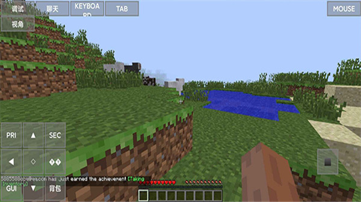

把高三攒的一百个模组搬进了宿舍，PojavLauncher让我在手机上续上了Minecraft
作为一个高考完把Minecraft存档带进校园的老玩家，我用PojavLauncher在安卓手机上复刻了PC上的Java版模组环境，从闪退蓝屏到稳定开服的折腾全记录。
收拾行李那天我翻了三次抽屉，最终还是把那块 8TB 的移动硬盘塞进了行李箱的夹层。那里面装着我从高一到高三攒的东西——一个叫「桃源乡」的 1.18.2 生存存档，加起来超过一百个的 Fabric 模组，还有我花了两个月搭出来的全自动甘蔗农场和村民交易所。
问题是，大学宿舍不让带游戏本。
我室友比我早到两天，掏出一部骁龙 8 Gen 2 的红米说："试试手机上跑 Java 版？"他说的那个启动器，就是后来我折腾了整整一个月的 PojavLauncher，去它的官网确认了一下，确实能在安卓上跑 Java 版。
第一次启动：模组全崩了
安装包从 PojavLauncher 的官网下载，装完点进去，登录 Mojang 正版账号那一瞬间，我看见熟悉的主菜单界面——方块、版本号、单人游戏按钮——差点以为自己在做梦。
然后我兴冲冲地把那堆模组 jar 一股脑扔进了启动器的 .minecraft/pojav_configs/1.18.2/mods/ 目录，点启动。
三秒后，黑屏。
第一次我以为是模组少了依赖，翻崩溃日志发现 ClassNotFoundException: net.fabricmc.fabric.api...，对，Fabric API 忘了装。装上再来一次，还是崩，这次是 Mixin conflict——两个模组改了同一块代码。我翻了一整天崩溃日志，后来去PojavLauncher文档查了排查指南，才想起 PC 上装模组时也是一个个加、一个个测的，急不得。
后来学会了二分法排查：先只保留 Fabric Loader + Fabric API + Sodium 这三件核心，启动测试；每次加两三个模组，一加就崩说明这批里有冲突的，再细分。折腾到凌晨两点，一百个模组筛到只剩七十二个能稳定跑。

画质拉锯战：把帧率从 15 拉到 60
模组跑起来只是第一步，手机屏幕上方块在抖。我进视频设置把图形从 Fancy 改成 Fast，平滑光照关掉，渲染距离从默认的 12 区块砍到 5 区块——FPS 从 15 直接跳到 40。然后 Fabric 三件套用上了：Sodium 重写渲染引擎，Lithium 优化红石和实体逻辑，Starlight 重写光照，洞穴里走不再卡成 PPT。最后把模拟距离降到 8 区块，关掉云粒子和实体阴影，帧率稳定在 55~60 之间。
手机屏幕小，那些 Fast 和 Fancy 的画质差异我其实看不太出来，但帧率翻倍是实实在在的——挖矿不再有延迟，在甘蔗农场跑圈的时候终于能看清旁边的苦力怕。
版本隔离救了我的存档
第二周我想试试 1.20.1 的新内容，又不想动 1.18.2 的存档。PojavLauncher 在这方面做得很贴心，每个版本自动建独立的配置目录——.minecraft/pojav_configs/1.18.2/ 和 .minecraft/pojav_configs/1.20.1/，各自的 saves、mods、options.txt 互不干扰。切换版本的时候启动器自动切换当前活跃的配置目录，我只需要在主界面选版本就行。
我在 1.20.1 开了个新存档，体验了一会儿新的铜质机关和蜂箱，没玩几天就想回去继续桃源乡的红石农场。切回 1.18.2，存档完好无损，模组也一个没少。要是没有这个隔离机制，搞不好我手滑把新版本的配置文件覆盖过去，三年的存档直接报废。
最后的折腾：手机也能连 Java 服务器
室友说想一起玩，但基岩版的服务器和 Java 版不互通。我翻 PojavLauncher 文档的时候发现它支持直接输入 Java 服务器地址，抱着试试看的心态填了我们之前在 PC 上开的那个 Realms IP——连上了。操作手感确实不如键鼠，触屏按钮点方块偶尔会飘，但能在 Java 版的服务器里和室友一起挖矿交易，我已经很满足了。

一个月下来的心得
中间还遇到过不少坑：手机 RAM 不够直接杀进程闪退，给游戏分配的内存从 2GB 调到 4GB 才稳住；Shader 包和渲染器不兼容，换了 Zink 渲染器才跑起来；有次版本文件损坏启动器变红，删掉版本目录让它重新下载就好了。每次崩溃我都先查 PojavLauncher 的中文文档，对着崩溃日志里的关键词（OutOfMemoryError、SIGSEGV、modloader mismatch）一个个对照排查，比瞎试效率高太多。
现在我的手机里同时跑着 1.18.2 的桃源乡和 1.20.1 的新存档，七十二个模组稳定运行，帧率在 55 以上。室友有时候凑过来借玩，看我在手机上搭红石电路的时候表情总有点复杂——他那台带不动模组的基岩版平板，现在只能拿来刷 B 站了。
PojavLauncher 的源码在GitHub上更新最勤快，国内用户也能去Gitee和GitCode跟进同步的文档。对我这种不想让三年存档躺在硬盘里落灰的老玩家来说，这工具可能不是最完美的，但它确实把我在高中攒的那份热爱，完整地搬进了大学宿舍。